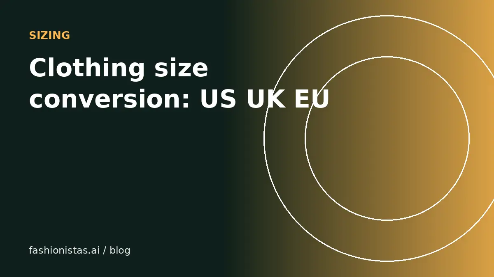

Clothing size conversion: US, UK, EU, Italian and Japanese sizes

Secondhand shopping means buying from every era and every country. A dress labeled 38 might be a French, German or Italian size; a vintage 12 might fit like a modern 6. This guide gives you the standard conversions, explains where they break down, and shows the one method that always works: comparing measurements.
Women's clothing sizes
These are the commonly used conversions for women's tops, dresses and outerwear. Brands vary, so treat them as a starting point.
| US | UK | EU (FR/DE) | Italy | Japan | Letter |
|---|---|---|---|---|---|
| 0 | 4 | 32 | 36 | 3 | XXS |
| 2 | 6 | 34 | 38 | 5 | XS |
| 4 | 8 | 36 | 40 | 7 | S |
| 6 | 10 | 38 | 42 | 9 | S/M |
| 8 | 12 | 40 | 44 | 11 | M |
| 10 | 14 | 42 | 46 | 13 | M/L |
| 12 | 16 | 44 | 48 | 15 | L |
| 14 | 18 | 46 | 50 | 17 | XL |
| 16 | 20 | 48 | 52 | 19 | XL/XXL |
A useful shortcut: UK is usually US + 4, EU (French and German) is usually US + 30, and Italian is usually US + 34. Japanese sizing varies more by brand and often runs smaller.
Men's clothing sizes
Men's sizing is more often based on body measurements, which makes it easier to convert.
| Item | US / UK | EU / Italy |
|---|---|---|
| Suit jacket / blazer | Chest in inches: 36, 38, 40, 42, 44 | Add 10: 46, 48, 50, 52, 54 |
| Dress shirt | Neck in inches: 15, 15.5, 16, 16.5, 17 | Neck in cm: 38, 39, 40/41, 42, 43 |
| Trousers / jeans | Waist in inches: 30, 32, 34, 36 | EU sizes vary; often 46, 48, 50, 52 |
| T-shirts / knitwear | S, M, L, XL | Often 46, 48/50, 52, 54 |
Designer menswear from Italy and France often runs slim. If you're between sizes, check the actual measurements in the listing before you size up or down.
Why sizes don't match across brands
There is no single global standard that brands follow. The same nominal size varies by brand, by cut and by year.
- Vanity sizing. Over recent decades many US brands have drifted toward labeling larger garments with smaller numbers. A modern US 8 is often larger than a US 8 from decades ago.
- Fit and cut. Slim, regular, relaxed and oversized versions of the same size can differ by several inches.
- Regional brands. European and Asian brands may cut for different body proportions.
- Stretch. Fabrics with elastane fit differently from rigid ones in the same size.
This is why the label is only a hint, especially secondhand.
Vintage sizing
Vintage sizes are the biggest trap. As a rough rule, vintage womenswear from the mid-century can run several sizes smaller than the same number today. A vintage 14 from the 1960s may fit like a modern 8 or 10.
Never buy vintage by the label. Ask for or check:
- Bust (armpit to armpit, doubled)
- Waist (flat across, doubled)
- Hips
- Shoulder width
- Length
Our guide to dating vintage clothing covers how to tell how old a piece is, which tells you how much to distrust its label.
The method that always works: measurements
Instead of converting labels, compare measurements. It takes five minutes once and saves you every future return.
- Take a garment you own that fits you perfectly, the same type you want to buy (a jacket for jackets, jeans for jeans).
- Lay it flat and measure it the same way sellers measure: pit to pit, length, waist, inseam. See our measuring guide for exactly where.
- Save those numbers in your phone.
- Compare them with the measurements in any listing. Within about an inch (2.5 cm) on key measurements usually means a similar fit.
If a listing doesn't include measurements, ask the seller. Most will gladly measure.
Using try-on alongside sizing
Measurements tell you whether something will fit; virtual try-on tells you whether you'll like how it looks. Use both. Paste a listing link into fashionistas.ai Try it on with your photo to see the style on you, then check the measurements before you buy.
For shoes, see our separate shoe size conversion guide.
Questions to ask a seller about fit
When a listing leaves you unsure, a quick message helps. Useful questions:
- "Could you measure pit to pit and the length from the top of the shoulder?"
- "Is there any stretch in the fabric?"
- "How did it fit you, and what size do you usually wear in other brands?"
- "Has it been altered or hemmed?"
- "Has it been washed or dried hot? Did it shrink?"
Sellers who answer clearly and quickly are usually the ones who describe condition honestly, too.
Letter sizes and plus sizes
Letter sizes (XS to XXL) are the least consistent of all. One brand's M is another's S, and unisex and men's letter sizes run larger than women's. When a listing shows only a letter size, measurements are essential.
Plus and extended sizes add another layer. US women's plus sizes are often labeled 14W, 16W, 18W and up, or 1X, 2X and 3X, and they're cut with different proportions from the same number in a standard size range: a 16W is typically not the same garment as a 16. UK plus sizes usually continue the UK scale (20, 22, 24), and EU sizes continue the EU scale (48, 50, 52). Once again, measurements are more reliable than any chart, and good sellers of extended sizes include bust, waist, hip and length on every listing.
Petite and tall
Petite sizing (often marked P) is cut for people around 5'4" and under, with shorter sleeves, torso and inseam, not just a smaller width. Tall sizing does the opposite. When buying secondhand, check length, sleeve and inseam measurements against your own, since a regular-cut garment can be several inches longer or shorter than a petite or tall version of the same size.
Kids' sizes in brief
Children's sizes are usually based on age or height. US sizes often use age (2T, 3T, 4, 5, 6), while European brands commonly label by height in centimeters (for example 98, 104, 110, 116). Roughly, EU 98 corresponds to around US 2T to 3T, 104 to 4, 110 to 5, and 116 to 6, but always check the brand's own chart and the garment's measurements, since kids grow and brands vary.
FAQ
What is a US size 8 in UK and EU sizes?
A women's US 8 is usually a UK 12, an EU (French/German) 40 and an Italian 44. Brands vary, so check measurements.
How do I convert EU to US women's sizes?
Subtract about 30 from French or German sizes, so EU 38 is roughly US 8 by some brands and US 6 by others. Italian sizes are about US + 34. When it matters, compare measurements.
Do vintage clothes run small?
Often yes. Mid-century vintage womenswear can run several sizes smaller than the same label today, so always go by measurements.
Are men's European suit sizes the same as US?
No. Add 10 to the US chest size in inches to get the usual European size, so a US 40 is an EU 50.
What is the best way to know if secondhand clothes will fit?
Measure a similar item you own that fits well, and compare it with the listing's measurements. Within about an inch usually means a similar fit.